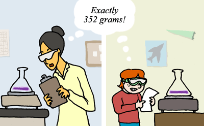

Method
Unit 6
Learning outcomes
By the end of this unit you should:
- understand the purpose of the method section
- understand the quantity of detail needed to be included
- be able to decide which verb tense and voice to use
Activity 1
Work in pairs. One person is the speaker. One person is the listener. The speakers describe the method of their research project in English. The listeners ask questions (in any language) if they do not understand anything. Once the listener understands. The listener uses Japanese (or English) to confirm the method. Change over
Activity 2
Answer these questions about your performance as speaker in Activity 1
| # | Question | 1 | 2 | 3 | 4 | 5 |
|---|---|---|---|---|---|---|
| 1 | Was your description clear? | not clear | a little | quite clear | clear | very clear |
| 2 | Did your listener understand your description? | no or not sure | some parts | most parts | yes, probably | yes, sure |
| 3 | Did your description contain enough specific details? | none | a few | some | yes, probably | yes, enough |
Remember there may be a big difference between your understanding of your method, and someone else`s understanding of your description. One of your aims is to minimize this discrepancy.
Activity 3
Read the text below, and answer this question:
Are there two, three, four or five many points in Version A?
Version A (prose)
A method section describes: the research design, the procedures used in your study and the materials used in your study. Sufficient detail needs to be provided so that someone else can replicate or extend your study. The method section should also include reasons for choosing the method of investigation and explanations of the method.
Image source: Image library of Understanding science, University of Berkeley.
Activity 4
Read the text below, and answer this question:
Are there two, three, four or five many points in Version B?
Version B (bullet point)
A method section describes:
- the research design,
- the procedures used in your study, and
- the materials used in your study.
Sufficient detail needs to be provided so that someone else can replicate or extend your study. The method section should also include:
- reasons for choosing the method of investigation, and
- explanations of the method.
Image source: Image library of Understanding science, University of Berkeley.
Activity 5
Compare version A and version B side by side. Which one is easier to understand? Why?
| Version A (prose) | Version B (bullet points) |
|---|---|
A method section describes: the research design, the procedures used in your study and the materials used in your study. Sufficient detail needs to be provided so that someone else can replicate or extend your study. The method section should also include reasons for choosing the method of investigation and explanations of the method. |
A method section describes:
Sufficient detail needs to be provided so that someone else can replicate or extend your study. The method section should also include:
|
- aaaaaaaaaaaaaaaaaaaaaa .
- bbbbbbbbbbbbbbbbbbbbbb , and
- cccccccccccccccccccccc .
- the method(s) you used to collect your data, conduct your experiments or design your computer programmes.
- the reason(s) for choosing the method(s).
- For example, (1) justifications for choosing a particular method(s), and/or (2) the objectives of the experiments or computer program testing, and the connection with your overall research objectives.
- for experiments, the procedural steps and the materials and apparatus used. For software development, the software or programming languages used and procedures of testing.
- the way you analyzed your data. For example, (1) treatment of data: qualitative or quantitative (statistical) tools or software used.
- any limitations of your methodology. This include, for example, time, method, sample size and other uncontrollable variables.
- Which tense is usually used in a method section?
- Why?
- Is passive voice or active voice more common?
- Why?
- simple past tense
- This tense is used to show completion of an action. When you submit your graduation thesis, the method has been finished and so past tense is commonly used. Using past tense emphasizes that the action is finished. It is also possible to use simple present tense, particularly when using a method developed by someone else. If you decide not to use simple past tense, check with your supervisor or professor first.
- passive voice
- Passive voice is often used to focus on a process rather than the people doing the process. Passive voice historically is associated with objectively. It currently remains the preferred option in most domains of computer science.
- How many reasons to use passive voice are described in the text below?
- What are the reasons?
- How many finite verb phrases are in each sentence? [finite verb = verb carrying a tense]
- Which voice is more commonly used: passive voice or active voice?
- Is the verb "stored" used in active or passive voice. Explain.
- (super challenging question) The verbs "started" and "decreased" are in active voice. Since the researcher started the solution at 1%, we can rewrite the sentence in passive voice as: "the solution was started at 1%". So, why can we also use active voice for passive meaning in this case?
- Which tense is most commonly used?
- Which voice is most commonly used?
- Is the purpose of the method (1) to enable someone to replicate your work, or (2) to prove that you did the work?
- Does the method explain (1) how you did the research, or (2) why you did the research?
- Can you give a general overview of your method in less than one minute in Japanese?
- How about in English?
- Can you give a detailed description of your method in three minutes in Japanese?
- How about in English?
Prose is a better choice when there are space constraints, but bullet points help readers identify the main points faster, making reading easier.
Activity 6
Read.
Introducing lists
There are two common types of lists: horizontal lists and vertical lists.
Horizontal lists
Horizontal lists are written in the same way as a normal sentence.
XXXXXXX include(s) : aaaaaaaaaaaaaaaaaaaaaa . bbbbbbbbbbbbbbbbbbbbbb , and cccccccccccccccccccccc .
Vertical lists
Vertical lists are written by placing each list element on a new line.
XXXXXX include(s) :
Note that each list begins with a colon. Colons are commonly used to introduce lists. The list elements are divided by commas. The final list item is introduced using "and". In this template list, the list elements can be words, phrases or clauses.
When creating lists you can use ordered lists (numbered lists) or unordered lists (bullet-point lists). We use unordered lists when it does not matter about the order of the elements. We use ordered lists when it matters about the sequence. Ordered lists can be used to show chronological order and priority order.
Activity 7
Read.
Common elements in a method section
Method sections vary greatly according to the type of graduation thesis. Some common elements include:
Image source: Nagasaka et al (2013)
Nagasaka, Y., Chao, Z.C., Hasegawa, N., Notoya, T. and Fujii, N., 2013. Spontaneous synchronization of arm motion between Japanese macaques. Scientific reports, 3, p.1151.
Activity 8
Work in pairs. Discuss the answers to these questions about graduation theses in the school of computer science and engineering.
Activity 9
Read the text below to answer these questions.
Language features in a method section
Verb tense
When describing procedures, use the simple past tense when referring to the procedures that you carried out. However, you can use the present tense if you are describing some standard procedures widely used by other researchers.
Voice
Passive voice is commonly used in describing procedures because your emphasis is on the procedure rather than the person.
Passive voice
The specimen was weighed in an electric balance before the test. Then it was placed at the center of the load cell.
Active voice
We weighed the specimen in an electric balance before the test. Then we placed it at the center of the load cell.
Note: The use of active or passive voice in a graduation thesis depends on the conventions of different disciplines. You should talk to your supervisor for the best advice.
Voice and imperatives
In the method section, it is common to refer your readers to relevant figures for more information. There are two ways of doing this. One is to use the imperative, for example:
1. See Figure 2 for the set up of the test.
2. See Appendix C for a list of companies participated in the survey.
The use of imperatives is common in textbooks and course materials. However, it may sound a bit impolite if you use them in your graduation thesis. Remember, your main readers are your supervisor and other second-readers. One way to avoid using imperatives is to use the passive voice. We can rewrite the two examples above using the passive voice:
1. The set up of the test is shown in Figure 2.
2. A list of companies participated in the survey is given in Appendix C.
Activity 10 : Preparation for challenge activity
Watch the slideshow presentation to make it easier to complete the followiing activity
Activity 11: Challenge activity - no answers provided
Read the text below to answer these questions.
2. Materials and methods (abbreviated)
2.1 Apples
Liberty apple cultivar was chosen for this study because it is highly prone to browning (Kim, Smith, & Lee, 1993). The apples were harvested at commercial maturity in the New York State Agricultural Experiment Station orchard during the 1998 growing season and stored in the cold room (0−2°C and 90−95% RH). The moisture content of the apples was 83.6% [...].
2.2 Anti-browning agents
Five major groups of chemical compounds [...] were either certified ACS grade or analytical grade [...]. Concentration of each dipping solution started at 1% and then decreased to lower concentrations [...].
2.3 Slicing and dipping
Selected apples of uniform size and color were washed by hand and sliced longitudinally into 10 equal pieces using a stainless steel hand slicer. Ten apple slices were treated in 500 ml of dipping solution for 3 minutes and drained. The excess liquid was removed on cheese cloth. Samples were kept on the laboratory bench at room temperature for 3 hours.
2.4 Slicing and dipping
The changes in flesh color of the treated apple slices were measured by a Hunter Colorimeter (Hunterlab D-25, USA) at 10 min intervals for 3 h. The degree of browning was expressed by “δL” value [...]. The results were expressed as a mean value from three replications of the 10 measured samples.
2.5 Slicing and dipping
Statistical analysis was carried out using a PC SAS package (SAS, 1990). Duncan's multiple range tests (P=0.05) were performed to determine any significant difference among various treatments.
Son, S.M., Moon, K.D. and Lee, C.Y., 2001. Inhibitory effects of various antibrowning agents on apple slices. Food Chemistry, 73(1), pp.23-30.
Unit review
Answer these general questions about the method section.
Answer these questions about your method section.
Motivate me
“One should use common words to say uncommon things.” – Arthur Schopenhauer